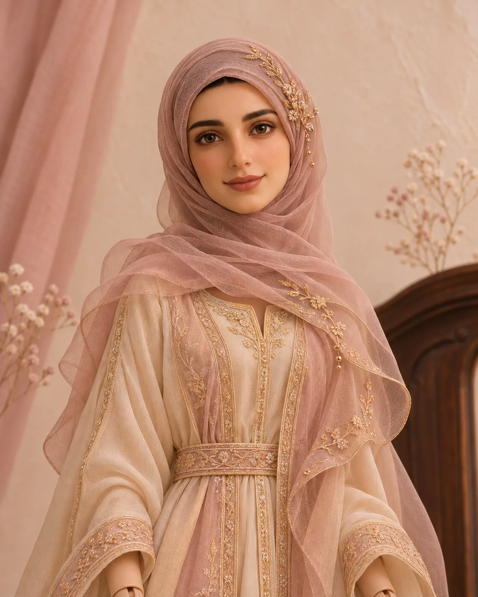
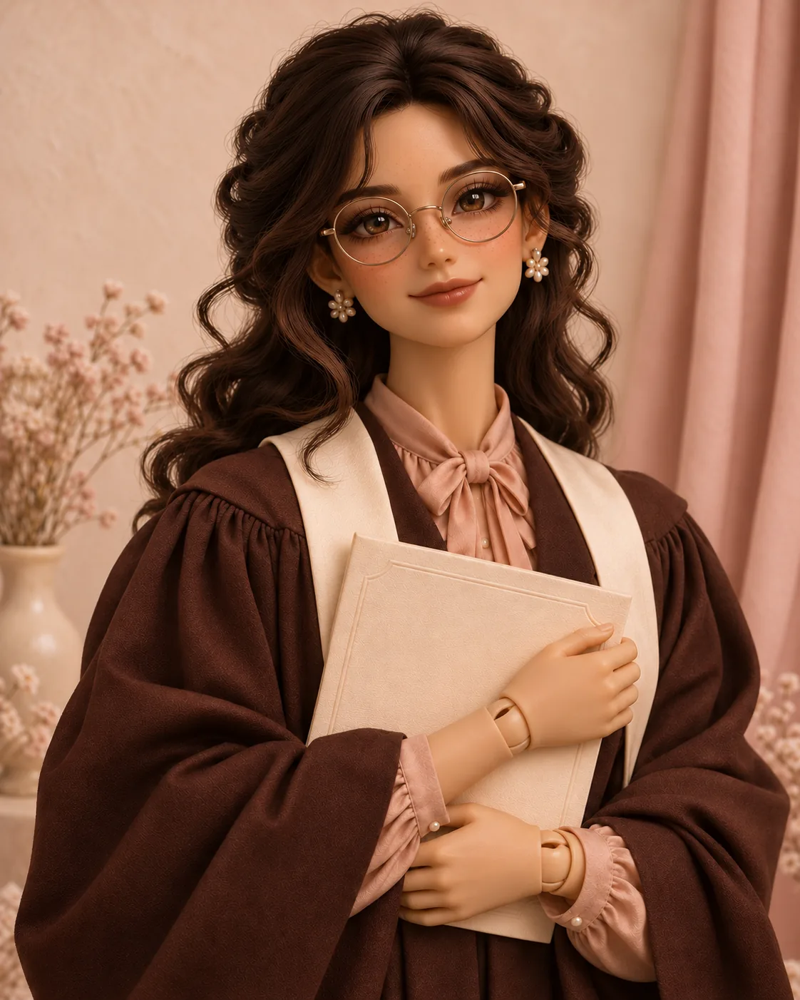
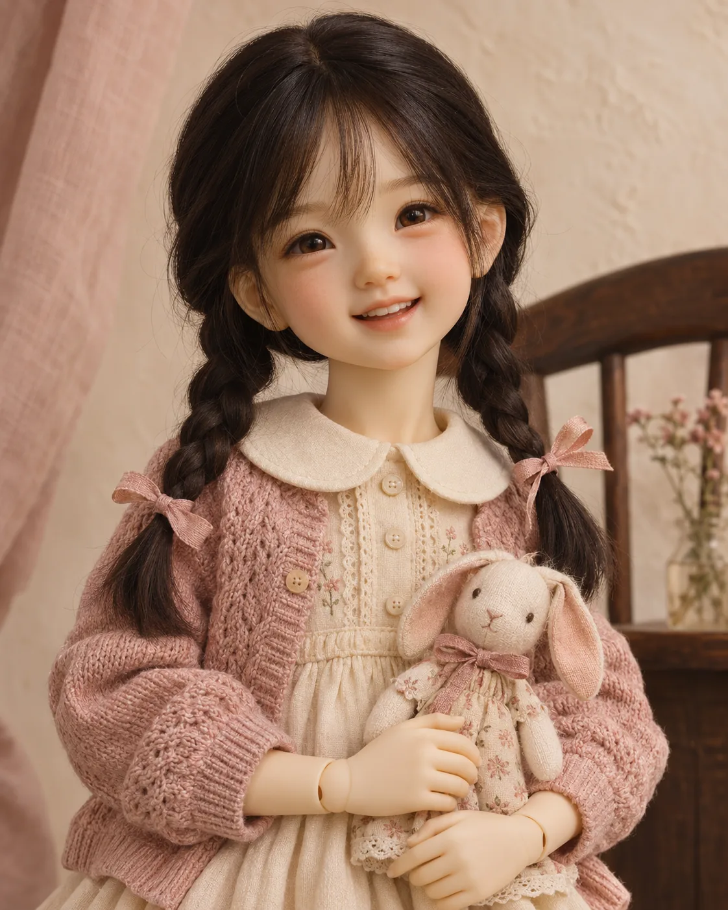
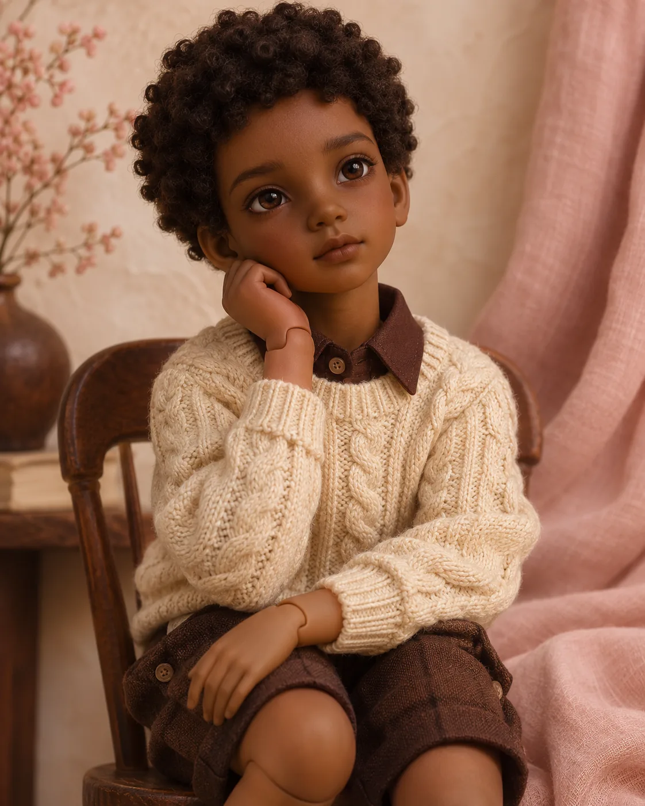
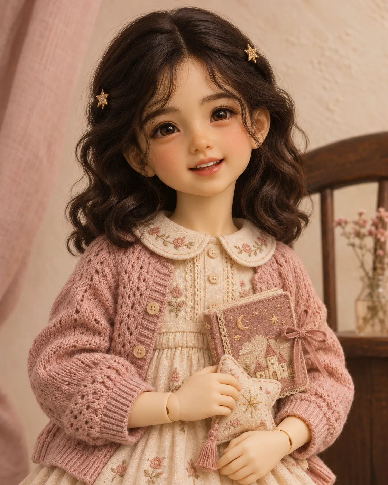
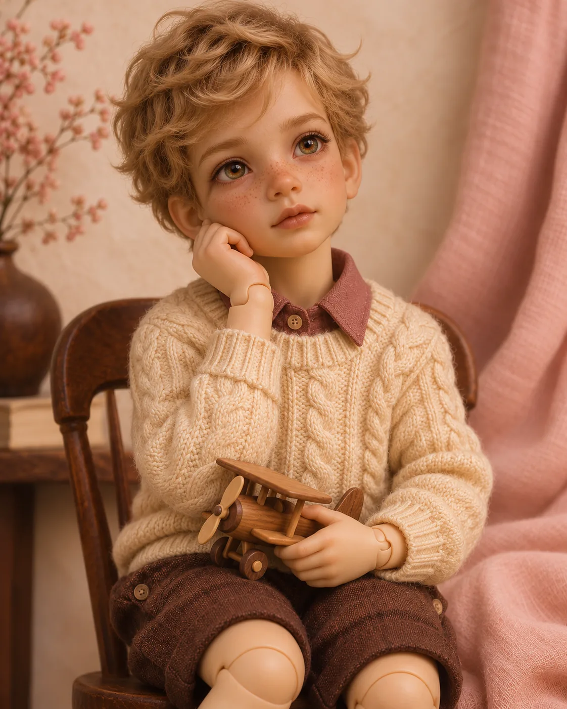
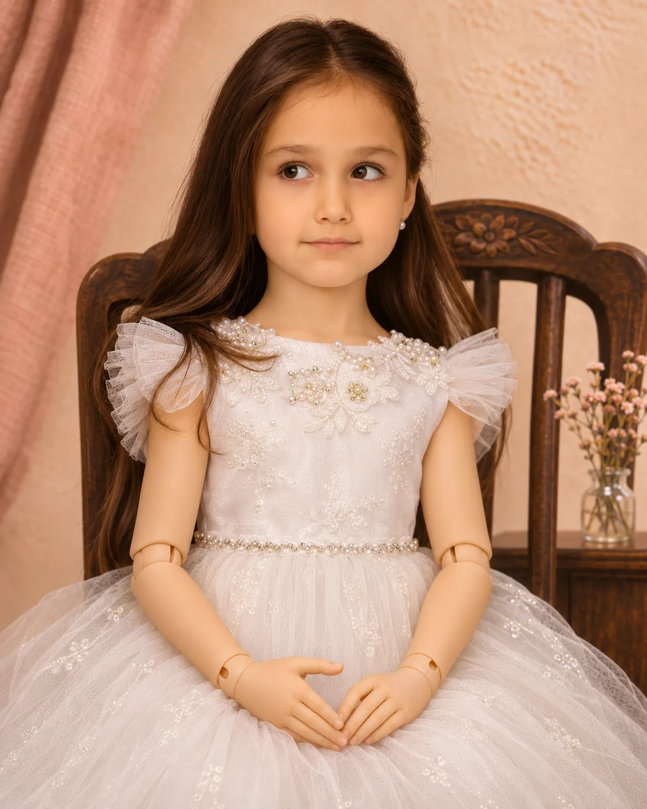
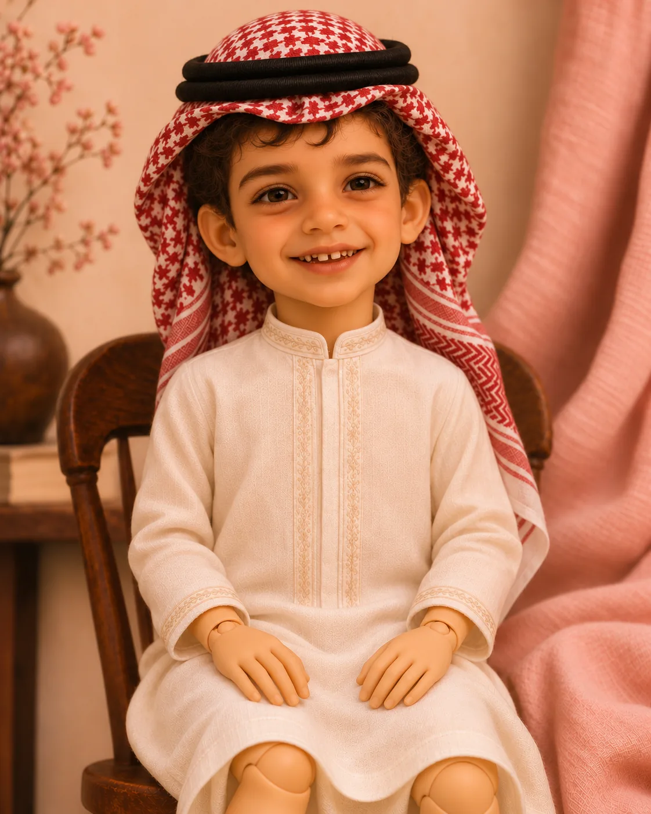
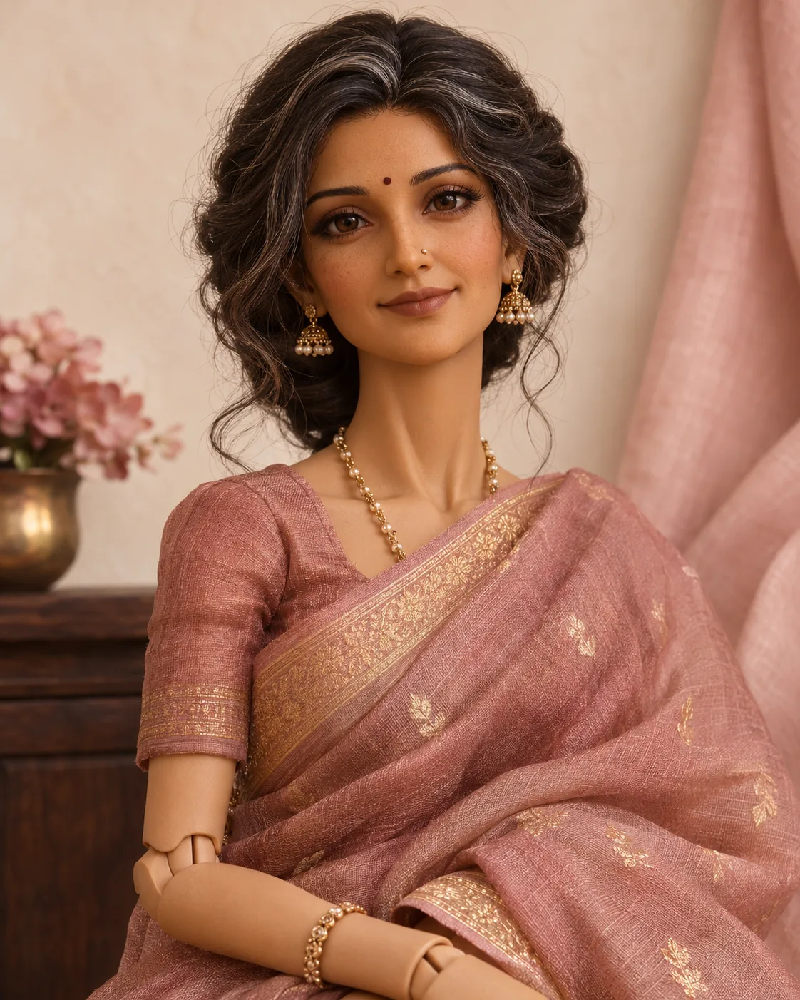
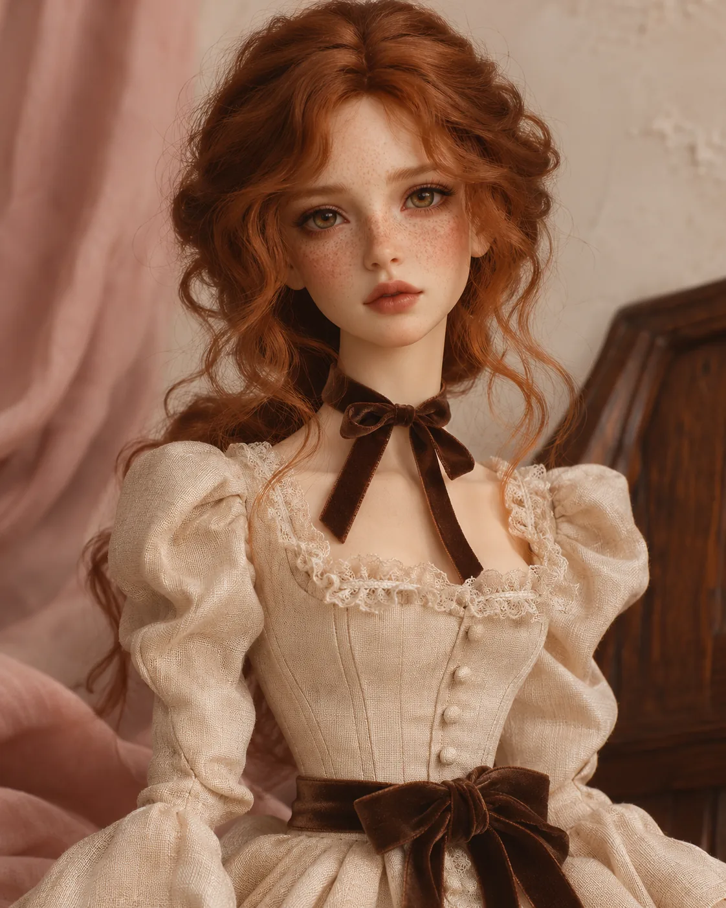

Share your story
Tell us who the doll is for and the feeling you want it to hold.
Personalized portrait art dolls
Your features, your mood, your signature style — reimagined as a one-of-one BJD-inspired portrait art doll.

AI imagery · Illustrative only
01 — The idea
We translate the details that feel most like you — a gaze, a hairstyle, a favourite silhouette — into an expressive portrait art doll. Every inquiry starts with listening, not a shopping cart.
Tell us who the doll is for and the feeling you want it to hold.
We discuss facial direction, hair, styling, outfit and keepsake details.
Availability, scope, estimate and timeline are confirmed before any commitment.
02 — The gallery
A study in varied beauty, generations, skin tones and personal style. These images are creative direction only — not photographs of manufactured products.




Portraits across generations
Children, parents and the people who shaped us — translated with age-appropriate details and individual character.









AI imagery · Illustrative only03 — Make it yours
Reference the features, mood and makeup direction that matter most to you.
Explore cut, texture, colour, parting and signature hair details.
Reimagine a favourite look or build a miniature couture direction from scratch.
Add meaningful colours, small accessories or a keepsake-inspired visual cue.
04 — Your inquiry
Share the first spark. We’ll use it to understand your direction and reply with what is realistically possible.
No payment is collected here.
This is a non-binding creative inquiry.
05 — Say hello
Studio note Follow our latest portraits and studio updates on Instagram, or write to us for early inquiries.